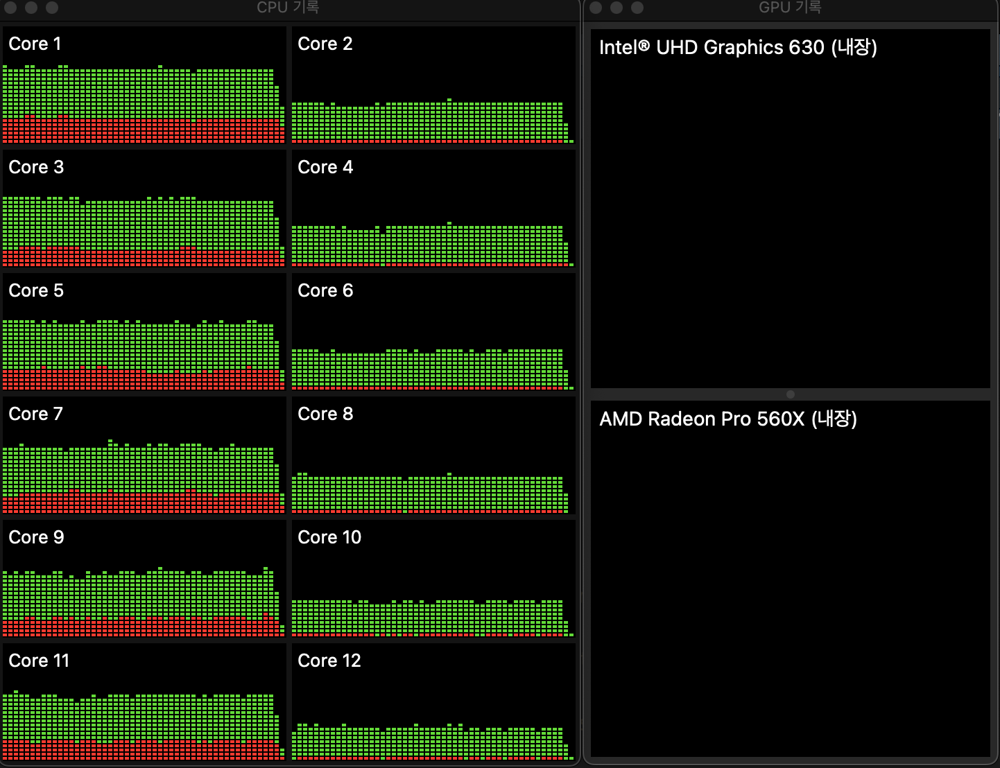
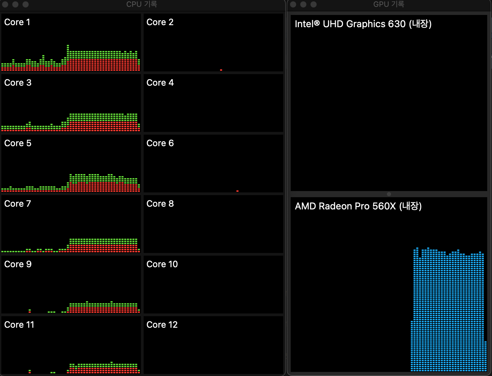

들어가기
코인 채굴의 수요로 Nvidia의 GPU의 가격이 넘사벽이라 가끔 CPU에서 딥러닝 코드를 수행했었습니다.업무적인 용도라기 보다는 취미에 가까운 이미지 프로세싱 작업이라 딥러닝이라 부르기도 애매합니다. 그런데 너무 느린 수행 속도로 인해서 그 취미는 오래가지 못했습니다. 우연히 사용하는 맥북의 GPU를 사용할 수 있다는 정보를 접했고, 이 방법을 시도해 봅니다.
Neural style transfer의 단상
딥러닝을 이용해서 원하는 이미지를 다른 스타일의 이미지로 변환하는 방법을 Neural style transfer라 합니다. Neural style transfer은 콘텐츠(content) 이미지와 스타일 참조(style reference) 이미지를 이용하여, 콘텐츠 이미지의 콘텐츠는 유지하되 스타일 참조 이미지의 화풍으로 채색한 것 같은 새로운 이미지를 생성하는 최적화 기술입니다. 1
보통 스타일 참조 이미지는 유명한 작가의 대표적인 작품을 사용합니다. 아마 당신은 고흐의 ‘별이 빛나는 밤’이나 뭉크의 ‘절규’로 이미지 변환을 한 작품을 본 적이 있을 겁니다. 본적인 없다면, https://www.tensorflow.org/tutorials/generative/style_transfer?hl=ko를 방문하여 유사한 사례를 경험해 보시기 바랍니다.
정선의 울산제색도
2018년도 봄에 와이프와 울산바위 등반 전, 바로 아래서 울산바위를 바라보다 앵글에 담은 사진을 정선의 인왕제색도를 스타일 이미지로 사용하여 변환한 이미지가 다음과 같습니다. 좌측은 원본 사진 이미지이고, 오른쪽인 변환한 이미지입니다.

기억으로는 2018년도에 재미삼아 이미지 변환을 수행하는 데 걸리는 시간이 인내하기에는 다소 길었던 기억이 있습니다. 그래서 취미같은 작업이 오래가지 못했었습니다.
코스 사이트 URL 변경
코스 사이트 컨텐츠를 배포해서 서비스할 사이트 URL은 다음처럼 meta.json의 “siteUrl”에 기술합니다.
"siteUrl": "https://course-starter-dlookr.netlify.com"
나의 노트북 스팩은요
나의 노트북 스팩은 애플의 맥북프로로 Intel Core i7 6코어 CPU와 4GB 비디오램을 가진 Radeon Pro 560X GPU를 가지고 있습니다. 이 GPU는 NVIDIA GeForce GTX 1050 Mobile과 유사하거나 조금 못한 성능을 가지고 있습니다. 그러나 tensorflow, keras등의 딥러닝 엔진에서는 사용할 수 없습니다.

딥러닝과 GPU
그래픽 처리 장치로 알려진 GPU는 분명히 처음부터 딥 러닝을 수행하도록 설계되지 않았습니다. 그러나 병렬 컴퓨팅의 본질은 그래픽 처리의 본질과 유사해 보입니다. GPU의 코어는 비록 약하지만 고도의 병렬 구조와 수많은 데이터 블록으로 인해 대용량 데이터 블록을 처리하는 알고리즘의 경우 CPU보다 더 효율적 입니다. 그래픽 처리와 딥러닝의 유사한 내부 특성(대부분의 작업을 순차적으로 수행하는 대신 동시에 수행할 수 있음)으로 인해, GPU는 자연스럽게 딥러닝 및 병렬 컴퓨팅에 활용하는 첫 번째 선택지가 되었습니다.2
PlaidML
PlaidML는 AMD와 Intel GPU를 지원하는 딥러닝 프레임워크입니다.3 AMD를 지원하기 때문에, PlaidML를 사용하면 나의 맥북프로의 Radeon Pro 560X GPU를 딥러닝 연산에 사용할 수 있게 됩니다.
PlaidML 설치
나의 노트북에는 이미 아나콘다와 tensorflow, keras가 설치되어 있습니다. conda env list 명령어로 2개의 콘다 가상환경을 가지고 있음을 알 수 있습니다.
(base) choonghyunryu@myWorld 73_mashup_python % conda env list
# conda environments:
#
base * /Users/choonghyunryu/opt/anaconda3
neural-style-tf /Users/choonghyunryu/opt/anaconda3/envs/neural-style-tf
r-reticulate /Users/choonghyunryu/opt/anaconda3/envs/r-reticulate그중 r-reticulate라는 이름의 콘다 가상환경에 PlaidML를 설치하려 합니다.
(base) choonghyunryu@myWorld 73_mashup_python % conda activate r-reticulate
# conda environments:
#
base * /Users/choonghyunryu/opt/anaconda3
neural-style-tf /Users/choonghyunryu/opt/anaconda3/envs/neural-style-tf
r-reticulate /Users/choonghyunryu/opt/anaconda3/envs/r-reticulate콘다에서는 pip install -U plaidml-keras로 PlaidML을 설치합니다.
(r-reticulate) choonghyunryu@myWorld 73_mashup_python % pip install -U plaidml-keras
Collecting plaidml-keras
Downloading plaidml_keras-0.7.0-py2.py3-none-any.whl (19 kB)
Requirement already satisfied: six in /Users/choonghyunryu/opt/anaconda3/envs/r-reticulate/lib/python3.7/site-packages (from plaidml-keras) (1.15.0)
Collecting keras==2.2.4
Downloading Keras-2.2.4-py2.py3-none-any.whl (312 kB)
|████████████████████████████████| 312 kB 12.4 MB/s
Requirement already satisfied: scipy>=0.14 in /Users/choonghyunryu/opt/anaconda3/envs/r-reticulate/lib/python3.7/site-packages (from keras==2.2.4->plaidml-keras) (1.4.1)
Requirement already satisfied: h5py in /Users/choonghyunryu/opt/anaconda3/envs/r-reticulate/lib/python3.7/site-packages (from keras==2.2.4->plaidml-keras) (2.10.0)
Requirement already satisfied: numpy>=1.9.1 in /Users/choonghyunryu/opt/anaconda3/envs/r-reticulate/lib/python3.7/site-packages (from keras==2.2.4->plaidml-keras) (1.19.4)
Requirement already satisfied: pyyaml in /Users/choonghyunryu/opt/anaconda3/envs/r-reticulate/lib/python3.7/site-packages (from keras==2.2.4->plaidml-keras) (3.12)
Requirement already satisfied: keras-preprocessing>=1.0.5 in /Users/choonghyunryu/opt/anaconda3/envs/r-reticulate/lib/python3.7/site-packages (from keras==2.2.4->plaidml-keras) (1.1.2)
Collecting keras-applications>=1.0.6
Downloading Keras_Applications-1.0.8-py3-none-any.whl (50 kB)
|████████████████████████████████| 50 kB 18.4 MB/s
Collecting plaidml
Downloading plaidml-0.7.0-py2.py3-none-macosx_10_10_x86_64.whl (17.8 MB)
|████████████████████████████████| 17.8 MB 48.8 MB/s
Collecting enum34>=1.1.6
Downloading enum34-1.1.10-py3-none-any.whl (11 kB)
Collecting cffi
Downloading cffi-1.15.0-cp37-cp37m-macosx_10_9_x86_64.whl (178 kB)
|████████████████████████████████| 178 kB 31.7 MB/s
Collecting pycparser
Downloading pycparser-2.21-py2.py3-none-any.whl (118 kB)
|████████████████████████████████| 118 kB 61.2 MB/s
Installing collected packages: pycparser, keras-applications, enum34, cffi, plaidml, keras, plaidml-keras
Attempting uninstall: keras
Found existing installation: Keras 2.4.3
Uninstalling Keras-2.4.3:
Successfully uninstalled Keras-2.4.3
Successfully installed cffi-1.15.0 enum34-1.1.10 keras-2.2.4 keras-applications-1.0.8 plaidml-0.7.0 plaidml-keras-0.7.0 pycparser-2.21
(r-reticulate) choonghyunryu@myWorld 73_mashup_python % PlaidML 환경설정
설치한 후에는 plaidml-setup로 환경설정을 수행해야 합니다.
(r-reticulate) choonghyunryu@myWorld 73_mashup_python % plaidml-setup
PlaidML Setup (0.7.0)
Thanks for using PlaidML!
The feedback we have received from our users indicates an ever-increasing need
for performance, programmability, and portability. During the past few months,
we have been restructuring PlaidML to address those needs. To make all the
changes we need to make while supporting our current user base, all development
of PlaidML has moved to a branch — plaidml-v1. We will continue to maintain and
support the master branch of PlaidML and the stable 0.7.0 release.
Read more here: https://github.com/plaidml/plaidml
Some Notes:
* Bugs and other issues: https://github.com/plaidml/plaidml/issues
* Questions: https://stackoverflow.com/questions/tagged/plaidml
* Say hello: https://groups.google.com/forum/#!forum/plaidml-dev
* PlaidML is licensed under the Apache License 2.0
Default Config Devices:
llvm_cpu.0 : CPU (via LLVM)
metal_amd_radeon_pro_560x.0 : AMD Radeon Pro 560X (Metal)
metal_intel(r)_uhd_graphics_630.0 : Intel(R) UHD Graphics 630 (Metal)
Experimental Config Devices:
llvm_cpu.0 : CPU (via LLVM)
opencl_amd_radeon_pro_560x_compute_engine.0 : AMD AMD Radeon Pro 560X Compute Engine (OpenCL)
opencl_intel_uhd_graphics_630.0 : Intel Inc. Intel(R) UHD Graphics 630 (OpenCL)
metal_amd_radeon_pro_560x.0 : AMD Radeon Pro 560X (Metal)
metal_intel(r)_uhd_graphics_630.0 : Intel(R) UHD Graphics 630 (Metal)
Using experimental devices can cause poor performance, crashes, and other nastiness.
Enable experimental device support? (y,n)[n]:y
Multiple devices detected (You can override by setting PLAIDML_DEVICE_IDS).
Please choose a default device:
1 : llvm_cpu.0
2 : opencl_amd_radeon_pro_560x_compute_engine.0
3 : opencl_intel_uhd_graphics_630.0
4 : metal_amd_radeon_pro_560x.0
5 : metal_intel(r)_uhd_graphics_630.0
Default device? (1,2,3,4,5)[1]:4
Selected device:
metal_amd_radeon_pro_560x.0
Almost done. Multiplying some matrices...
Tile code:
function (B[X,Z], C[Z,Y]) -> (A) { A[x,y : X,Y] = +(B[x,z] * C[z,y]); }
Whew. That worked.
Save settings to /Users/choonghyunryu/.plaidml? (y,n)[y]:y
Success!
(r-reticulate) choonghyunryu@myWorld 73_mashup_python % 설치 과정에서는 사용자의 선택을 위한 세번의 프롬프트가 나타납니다.
- 첫번째는 Experimental Config Devices를 지원할지의 여부를 묻습니다.
- y를 선택합니다.
- 두번째는 PlaidML이 사용할 기본 디바이스를 선택하는 질문이 나타나는데,
- 4 : metal_amd_radeon_pro_560x.0를 선택했습니다.
- Radeon Pro 560X GPU를 의미합니다.
- 세번째는 설정파일을 저장할 경로를 묻습니다.
- 사용자 홈디렉토리에 저장할지를 묻는데,
- y를 입력하여 사용자 홈디렉토리에 저장하였습니다.
PlaidML 테스트
설치한 후에는 PlaidML의 정상 작동 여부를 테스트합니다. 파이썬의 plaidbench 패키지를 설치합니다.
(r-reticulate) choonghyunryu@myWorld 73_mashup_python % pip install plaidbench
Collecting plaidbench
Downloading plaidbench-0.7.0-py2.py3-none-any.whl (10.1 MB)
|████████████████████████████████| 10.1 MB 12.5 MB/s
Requirement already satisfied: six in /Users/choonghyunryu/opt/anaconda3/envs/r-reticulate/lib/python3.7/site-packages (from plaidbench) (1.15.0)
Requirement already satisfied: h5py>=2.7.0 in /Users/choonghyunryu/opt/anaconda3/envs/r-reticulate/lib/python3.7/site-packages (from plaidbench) (2.10.0)
Requirement already satisfied: colorama in /Users/choonghyunryu/opt/anaconda3/envs/r-reticulate/lib/python3.7/site-packages (from plaidbench) (0.4.4)
Requirement already satisfied: numpy in /Users/choonghyunryu/opt/anaconda3/envs/r-reticulate/lib/python3.7/site-packages (from plaidbench) (1.19.4)
Requirement already satisfied: enum34>=1.1.6 in /Users/choonghyunryu/opt/anaconda3/envs/r-reticulate/lib/python3.7/site-packages (from plaidbench) (1.1.10)
Requirement already satisfied: plaidml in /Users/choonghyunryu/opt/anaconda3/envs/r-reticulate/lib/python3.7/site-packages (from plaidbench) (0.7.0)
Collecting click>=6.0.0
Downloading click-8.0.4-py3-none-any.whl (97 kB)
|████████████████████████████████| 97 kB 22.0 MB/s
Requirement already satisfied: importlib-metadata in /Users/choonghyunryu/opt/anaconda3/envs/r-reticulate/lib/python3.7/site-packages (from click>=6.0.0->plaidbench) (3.3.0)
Requirement already satisfied: zipp>=0.5 in /Users/choonghyunryu/opt/anaconda3/envs/r-reticulate/lib/python3.7/site-packages (from importlib-metadata->click>=6.0.0->plaidbench) (3.4.0)
Requirement already satisfied: typing-extensions>=3.6.4 in /Users/choonghyunryu/opt/anaconda3/envs/r-reticulate/lib/python3.7/site-packages (from importlib-metadata->click>=6.0.0->plaidbench) (3.7.4.3)
Requirement already satisfied: cffi in /Users/choonghyunryu/opt/anaconda3/envs/r-reticulate/lib/python3.7/site-packages (from plaidml->plaidbench) (1.15.0)
Requirement already satisfied: pycparser in /Users/choonghyunryu/opt/anaconda3/envs/r-reticulate/lib/python3.7/site-packages (from cffi->plaidml->plaidbench) (2.21)
Installing collected packages: click, plaidbench
Successfully installed click-8.0.4 plaidbench-0.7.0
(r-reticulate) choonghyunryu@myWorld 73_mashup_python % 그리고 mobilenet을 실행하여 PlaidML의 정상 작동 여부를 점검합니다. 결과의 INFO를 보면 PlaidML가 “metal_amd_radeon_pro_560x.0” 디바이스를 정상적으로 오픈한 것이 확인됩니다. 정상적으로 수행됨을 확인한 것입니다.
(r-reticulate) choonghyunryu@myWorld 73_mashup_python % plaidbench keras mobilenet
Running 1024 examples with mobilenet, batch size 1, on backend plaid
INFO:plaidml:Opening device "metal_amd_radeon_pro_560x.0"
Downloading data from https://github.com/fchollet/deep-learning-models/releases/download/v0.6/mobilenet_1_0_224_tf.h5
17227776/17225924 [==============================] - 3s 0us/step
Compiling network... Warming up... Running...
Example finished, elapsed: 1.994s (compile), 7.569s (execution)
-----------------------------------------------------------------------------------------
Network Name Inference Latency Time / FPS
-----------------------------------------------------------------------------------------
mobilenet 7.39 ms 0.00 ms / 1000000000.00 fps
Correctness: PASS, max_error: 1.675534622336272e-05, max_abs_error: 7.674098014831543e-07, fail_ratio: 0.0
(r-reticulate) choonghyunryu@myWorld 73_mashup_python % CPU와 GPU 수행속도 비교
맥북프로의 CPU와 GPU의 딥러닝 수행 성능을 비교하기 위해서 다음 사이트에서 파이썬 소스를 참고하여 두 개의 파이썬 코드를 작성했습니다. 이 소스는 Fashion MNIST 이미지를 분류하는 기능을 담고 있습니다.4
https://github.com/franknb/Medium/blob/master/PlaidML_CNN/PlaidML_Fashion_mnist.ipynb
CPU 수행 코드 및 수행 속도
CPU에서 Fashion MNIST 이미지를 분류하는 소스는 다음과 같고 test_no_plaidml.py라는 파일에 저장되어 있습니다.
import time
import tensorflow as tf
from tensorflow import keras
from tensorflow.keras.models import Sequential
from tensorflow.keras.layers import Dense, Dropout, Flatten
from tensorflow.keras.layers import Conv2D, MaxPooling2D
from tensorflow.keras import backend as K
# Download fashion dataset from Keras
fashion_mnist = keras.datasets.fashion_mnist
(x_train, y_train), (x_test, y_test) = keras.datasets.fashion_mnist.load_data()
# Reshape and normalize the data
x_train = x_train.astype('float32').reshape(60000,28,28,1) / 255
x_test = x_test.astype('float32').reshape(10000,28,28,1) / 255
# Build a CNN model. You should see "INFO:plaidml:Opening device xxx" after you run this chunk
model = tf.keras.Sequential()
model.add(keras.layers.Conv2D(filters=64, kernel_size=2, padding='same', activation='relu', input_shape=(28,28,1)))
model.add(keras.layers.MaxPooling2D(pool_size=2))
model.add(keras.layers.Dropout(0.3))
model.add(keras.layers.Conv2D(filters=32, kernel_size=2, padding='same', activation='relu'))
model.add(keras.layers.MaxPooling2D(pool_size=2))
model.add(keras.layers.Dropout(0.3))
model.add(keras.layers.Flatten())
model.add(keras.layers.Dense(256, activation='relu'))
model.add(keras.layers.Dropout(0.5))
model.add(keras.layers.Dense(10, activation='softmax'))
# Compile the model
model.compile(optimizer='adam',
loss=keras.losses.sparse_categorical_crossentropy,
metrics=['accuracy'])
# Fit the model on training set
print("Timing inference...")
start = time.time()
model.fit(x_train, y_train,
batch_size=64,
epochs=10)
print("Ran in {} seconds".format(time.time() - start))
# Evaluate the model on test set
score = model.evaluate(x_test, y_test, verbose=0)
# Print test accuracy
print('\n', 'Test accuracy:', score[1])콘다 가상환경에서 다음같이 실행합니다.
(r-reticulate) choonghyunryu@myWorld 73_mashup_python % python test_no_plaidml.py
2022-03-27 18:21:25.216124: I tensorflow/core/platform/cpu_feature_guard.cc:143] Your CPU supports instructions that this TensorFlow binary was not compiled to use: AVX2 FMA
2022-03-27 18:21:25.232006: I tensorflow/compiler/xla/service/service.cc:168] XLA service 0x7fc23dc24d20 initialized for platform Host (this does not guarantee that XLA will be used). Devices:
2022-03-27 18:21:25.232025: I tensorflow/compiler/xla/service/service.cc:176] StreamExecutor device (0): Host, Default Version
Timing inference...
Epoch 1/10
938/938 [==============================] - 27s 29ms/step - loss: 0.5820 - accuracy: 0.7855
Epoch 2/10
938/938 [==============================] - 36s 38ms/step - loss: 0.4101 - accuracy: 0.8508
Epoch 3/10
938/938 [==============================] - 39s 41ms/step - loss: 0.3642 - accuracy: 0.8675
Epoch 4/10
938/938 [==============================] - 39s 41ms/step - loss: 0.3379 - accuracy: 0.8765
Epoch 5/10
938/938 [==============================] - 38s 41ms/step - loss: 0.3214 - accuracy: 0.8818
Epoch 6/10
938/938 [==============================] - 39s 42ms/step - loss: 0.3032 - accuracy: 0.8877
Epoch 7/10
938/938 [==============================] - 41s 43ms/step - loss: 0.2917 - accuracy: 0.8923
Epoch 8/10
938/938 [==============================] - 40s 43ms/step - loss: 0.2833 - accuracy: 0.8955
Epoch 9/10
938/938 [==============================] - 42s 45ms/step - loss: 0.2742 - accuracy: 0.8976
Epoch 10/10
938/938 [==============================] - 42s 45ms/step - loss: 0.2683 - accuracy: 0.9015
Ran in 385.2737982273102 seconds
Test accuracy: 0.9103000164031982모델을 빌드하는데 약 385초가 소요되었으며, 작업을 수행하는 과정의 CPU와 GPU의 사용량을 보면 다음과 같습니다.

GPU 수행 코드 및 수행 속도
GPU에서 Fashion MNIST 이미지를 분류하는 소스는 다음과 같고 test_plaidml.py라는 파일에 저장되어 있습니다.
CPU에서 수행하는 코드와의 가장 큰 차이점은 실행에 앞서 다음의 두 줄을 삽입하는 것입니다.
import os
os.environ["KERAS_BACKEND"] = "plaidml.keras.backend"import time
import os
os.environ["KERAS_BACKEND"] = "plaidml.keras.backend"
import keras
from keras.models import Sequential
from keras.layers import Dense, Dropout, Flatten
from keras.layers import Conv2D, MaxPooling2D
from keras import backend as K
# Download fashion dataset from Keras
fashion_mnist = keras.datasets.fashion_mnist
(x_train, y_train), (x_test, y_test) = keras.datasets.fashion_mnist.load_data()
# Reshape and normalize the data
x_train = x_train.astype('float32').reshape(60000,28,28,1) / 255
x_test = x_test.astype('float32').reshape(10000,28,28,1) / 255
# Build a CNN model. You should see "INFO:plaidml:Opening device xxx" after you run this chunk
model = keras.Sequential()
model.add(keras.layers.Conv2D(filters=64, kernel_size=2, padding='same', activation='relu', input_shape=(28,28,1)))
model.add(keras.layers.MaxPooling2D(pool_size=2))
model.add(keras.layers.Dropout(0.3))
model.add(keras.layers.Conv2D(filters=32, kernel_size=2, padding='same', activation='relu'))
model.add(keras.layers.MaxPooling2D(pool_size=2))
model.add(keras.layers.Dropout(0.3))
model.add(keras.layers.Flatten())
model.add(keras.layers.Dense(256, activation='relu'))
model.add(keras.layers.Dropout(0.5))
model.add(keras.layers.Dense(10, activation='softmax'))
# Compile the model
model.compile(optimizer='adam',
loss=keras.losses.sparse_categorical_crossentropy,
metrics=['accuracy'])
# Fit the model on training set
print("Timing inference...")
start = time.time()
model.fit(x_train, y_train,
batch_size=64,
epochs=10)
print("Ran in {} seconds".format(time.time() - start))
# Evaluate the model on test set
score = model.evaluate(x_test, y_test, verbose=0)
# Print test accuracy
print('\n', 'Test accuracy:', score[1])콘다 가상환경에서 다음같이 실행합니다.
(r-reticulate) choonghyunryu@myWorld 73_mashup_python % python test_plaidml.py
Using plaidml.keras.backend backend.
INFO:plaidml:Opening device "metal_amd_radeon_pro_560x.0"
Timing inference...
Epoch 1/10
60000/60000 [==============================] - 14s 227us/step - loss: 0.5791 - acc: 0.7886
Epoch 2/10
60000/60000 [==============================] - 13s 214us/step - loss: 0.4043 - acc: 0.8554
Epoch 3/10
60000/60000 [==============================] - 13s 214us/step - loss: 0.3643 - acc: 0.8659
Epoch 4/10
60000/60000 [==============================] - 13s 217us/step - loss: 0.3422 - acc: 0.8744
Epoch 5/10
60000/60000 [==============================] - 13s 220us/step - loss: 0.3215 - acc: 0.8823
Epoch 6/10
60000/60000 [==============================] - 13s 219us/step - loss: 0.3074 - acc: 0.8880
Epoch 7/10
60000/60000 [==============================] - 13s 217us/step - loss: 0.2959 - acc: 0.8896
Epoch 8/10
60000/60000 [==============================] - 13s 222us/step - loss: 0.2877 - acc: 0.8944
Epoch 9/10
60000/60000 [==============================] - 13s 221us/step - loss: 0.2753 - acc: 0.8978
Epoch 10/10
60000/60000 [==============================] - 13s 220us/step - loss: 0.2677 - acc: 0.9014
Ran in 131.56708812713623 seconds
Test accuracy: 0.9068
(r-reticulate) choonghyunryu@myWorld 73_mashup_python % 모델을 빌드하는데 약 131초가 소요되었으며, 작업을 수행하는 과정의 CPU와 GPU의 사용량을 보면 다음과 같습니다. GPU가 사용되는 것을 쉽게 확인할 수 있습니다. 실제로 수행되는 시간은 GPU의 게이지가 피크치기 시작한 시점부터입니다. 그 이전은 다른 작업을 수행한 시간입니다. 작업이 전체 구간을 다 채우지 않고 끝났기 때문입니다. 그런데, 온전히 GPU만 수행되는 것이 아니라, CPU도 어느정도 연산을 수행함을 알 수 있습니다.

CPU와 GPU의 수행 속도 비교
CPU가 385초, GPU가 132초 걸려서 GPU가 약 3배 정도 빠르게 수행되었습니다. 참고한 자료에 의하면 15배 정보의 차이가 있었다고 하니, 사용자 환경이나 수행하는 딥러닝 코드에 따라 차이가 있을 것으로 보입니다.
향후 일정과 소회
이제는 맥북프로의 내장 GPU를 딥러닝에 사용할 수 있다는 것을 확인했습니다. 다음에는 R의 reticulate 패키지를 이용해서 R에서 딥러닝을 위한 python과의 협업에 대해서 살펴보겠습니다.
노트북에서 수행하는 딥러닝 모델 개발에는 한계가 분명이 존재합니다. 장난감 수준의 환경이지만, 그동안 사용하지 못한 리소스를 사용할 수 있다는 것에 만족하려 합니다.
tf.keras를 사용한 Neural Style Transfer. https://www.tensorflow.org/tutorials/generative/style_transfer?hl=ko↩︎
Deep Learning using GPU on your MacBook. https://towardsdatascience.com/deep-learning-using-gpu-on-your-macbook-c9becba7c43↩︎
PlaidML_Fashion_mnist.ipynb. https://github.com/franknb/Medium/blob/master/PlaidML_CNN/PlaidML_Fashion_mnist.ipynb↩︎